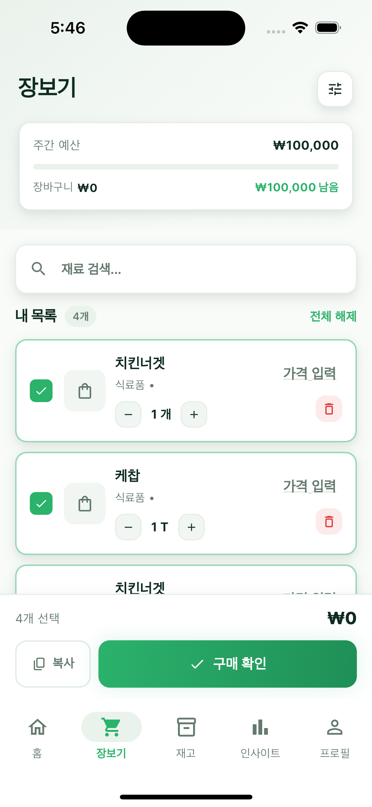
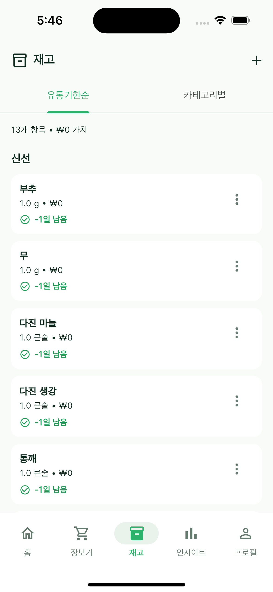
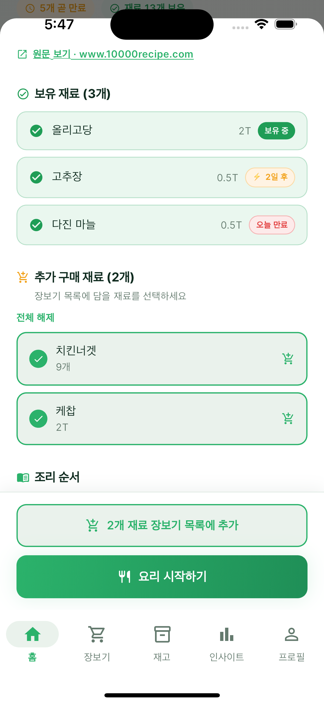
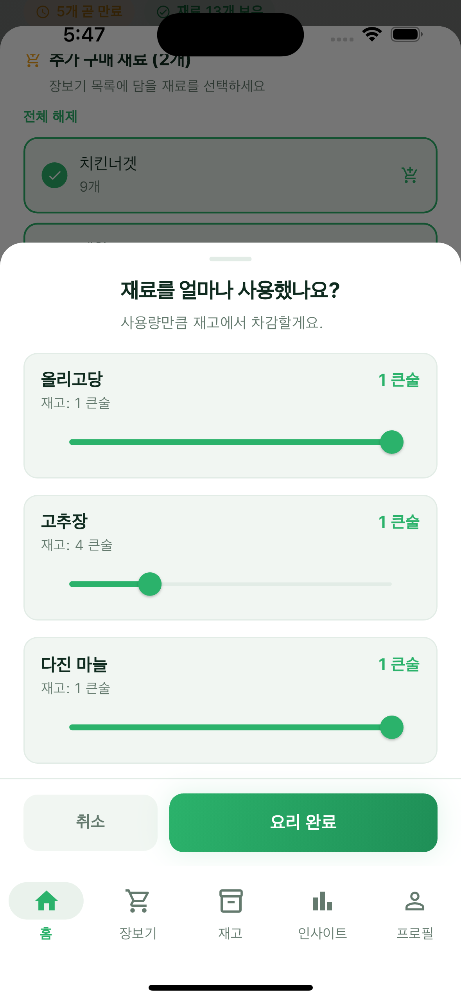
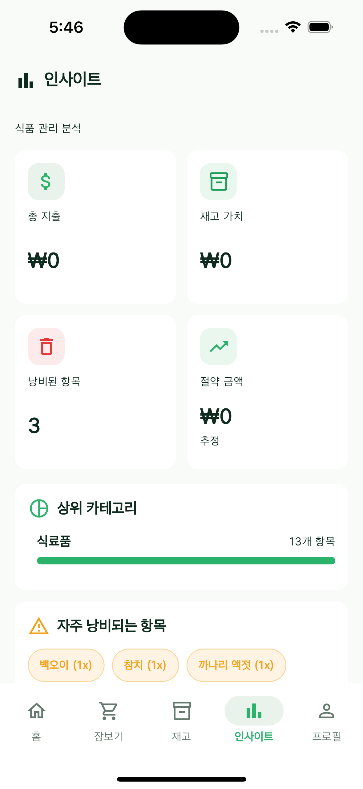

Calm by default
Our software should reduce the number of decisions someone has to make in a day, not add to them.
Everything Essential builds calm, thoughtful software that connects the small, everyday choices around food, time, money, and waste — so people, families, and households can run on less friction.
What we do
We design intelligent products for the categories most people already think about every day — and most software still ignores. Our work begins with food, but the philosophy is broader: clarity, calm, and better defaults.
Our software should reduce the number of decisions someone has to make in a day, not add to them.
Grocery, inventory, recipes, budget — they are one system in real life. We treat them as one system in software.
Explainable defaults, careful data, and decisions people can understand and override.
The problem
People keep a grocery list in one app, recipes in another, prices in their head, and expiry dates on a sticker. Most friction in daily life is a thousand small decisions that do not talk to each other.
× The shopping list does not know what is already in the fridge.
× The recipe app does not know what is about to expire.
× The budget app does not see what got thrown away.
× Households repeat the same decisions every week, with no memory.
Get in touch
If you are an investor, distribution partner, or collaborator working at the edges of food, household intelligence, or essential consumer software — we would love to hear from you.
Friddy is a food operating system for the modern household. It connects what you buy, what is in your kitchen, what is about to expire, and what to cook — into one calm, joined-up loop.

How it works
Most apps cover one stage of the kitchen. Friddy covers the whole arc, so each step makes the next one smarter.
Plan the week using what you actually have, eat, and like.
A single list that knows your kitchen, budget, and routine.
The kitchen updates itself: pantry, fridge, and freezer.
Nothing forgotten at the back of the shelf.
Cook from what is in front of you, not what is online.
The staples come back on their own. You stay in control.
Inside Friddy
A small tour of the screens that hold the loop together.




Why it matters
Friddy is a quiet system that does the bookkeeping behind food so households can spend less, waste less, and decide faster.
Live on iOS · Korea
Download the iOS app to start cooking from what is in front of you.